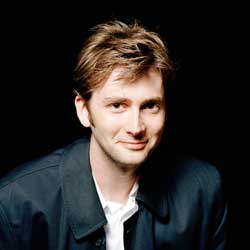

|
|
David Tennant
David Tennant (born David John McDonald) is a Scottish actor known for his roles as the tenth incarnation of the Doctor is the British television series Doctor Who, as Giacomo Casanova in the TV serial Casanova (2005) and as Barty Crouch, Jr. in the film Harry Potter and the Goblet of Fire (2005). In addition to his appearances on screen, Tennant has worked as a voice actor and appeared in a critically acclaimed stage production of Hamlet.
Tennant was born in Bathgate, West Lothian to Essdale Helen (née McLeod; now deceased) and the Very Rev. Dr. Alexander McDonald (born 1937). He grew up with his brother Blair and sister Karen in Ralston, Renfrewshire, where his father was the local Church of Scotland Minister and former Moderator. Tennant's maternal great-grandparents, William and Agnes Blair, were staunch Protestants from County Londonderry, Ulster, the northern province of Ireland, and were among the signatories of the Ulster Covenant in 1912. William Blair was a member of the Grand Orange Lodge of Ireland. Tennant's maternal grandfather, footballer Archie McLeod, met William and Agnes's daughter Nellie while playing for Derry City. McLeod's parents were from the Isle of Mull in the Scottish Highlands and are descended from tenant farmers.
At the age of three, Tennant told his parents that he wanted to become an actor because he was a fan of Doctor Who, but they tried to encourage him to aim for more conventional work. He watched almost every Doctor Who episode for years, and he spoke to Tom Baker at a book-signing event in Glasgow. Tennant says he was "absurdly single-minded" in pursuing an acting career. Tennant was educated at Ralston Primary and Paisley Grammar School, where he enjoyed a fruitful relationship with English language teacher Moira Robertson, who was among the first to recognise his potential. He acted in school productions throughout primary and secondary school.
Tennant's talent at this young age was spotted by Scottish actress Edith MacArthur. After seeing young David's first performance at age 11, she told his parents he would become a successful stage actor. Tennant also attended Saturday classes at the Royal Scottish Academy of Music and Drama; at 16, he passed an audition for the Academy, one of their youngest students, and studied there between the ages of 17 and 20, taking his stage name from the Pet Shop Boys frontman Neil Tennant after reading a copy of Smash Hits magazine because there was another David McDonald already on the books of the Equity union. Tennant has stated that he later had to legally change his name to Tennant in order to meet Screen Actors Guild rules.
Tennant made his professional acting debut while still in secondary school. When he was 16, he acted in an anti-smoking film made by the Glasgow Health Board which aired on television and was also screened in schools.[13] The following year, he played a role in an episode of Dramarama. Tennant's first professional role upon graduating from drama school was in a staging of The Resistible Rise of Arturo Ui costarring Ashley Jensen, one of a few plays in which he performed as part of theagitprop 7:84 Theatre Company. Tennant also made an early television appearance in the Scottish TV sitcom Rab C Nesbitt as a transsexual barmaid called Davina. In the 1990s, Tennant appeared in several plays at the Dundee Repertory Theatre.
Tennant's first major TV role was as the manic depressive Campbell in the Scottish drama series Takin' Over the Asylum (1994). During filming, Tennant met comic actress and writer Arabella Weir. When he moved to London shortly afterwards he lodged with Weir for five years and became godfather to her youngest child. He has subsequently appeared alongside Weir in many productions; as a guest in her spoof television series Posh Nosh, in the Doctor Who audio drama Exile (during which Weir played an alternate version of the Doctor), and as panellists on the West Wing Ultimate Quiz on More4 (Weir later guest starred on Doctor Who itself after Tennant left the series). One of his earliest big screen roles was in Jude (1996), in which he shared a scene with Christopher Eccleston, playing a drunken undergraduate who challenges Eccleston's Jude to prove his intellect. Coincidentally, Eccleston portrayed the incarnation of The Doctor immediately preceding Tennant's. He developed his career in the British theatre, frequently performing with the Royal Shakespeare Company. His first Shakespearean role for the RSC was in As You Like It (1996); having auditioned for the role of Orlando, the romantic lead, he was instead cast as the jester Touchstone, which he played in his natural Scottish accent.[18] He subsequently specialised in comic roles, playing Antipholus of Syracuse in The Comedy of Errors and Captain Jack Absolute in The Rivals, although he also played the tragic role of Romeo in Romeo and Juliet.
Tennant contributed to several audio dramatisations of Shakespeare for the Arkangel Shakespeare series (1998). His roles include a reprisal of his Antipholus of Syracuse in The Comedy of Errors, as well as Launcelot Gobbo in The Merchant of Venice, Edgar/Poor Tom in King Lear, and Mercutio in Romeo and Juliet, all of which he performs in his natural accent. In 1995, Tennant appeared at the Royal National Theatre, London, playing the role of Nicholas Beckett in Joe Orton's What the Butler Saw. In television, Tennant appeared in the first episode of Reeves and Mortimer's revamped Randall & Hopkirk (Deceased) in 2000, playing an eccentric artist. This is one of his few TV roles in his native Scottish accent. During the Christmas season of 2002, he starred in a series of television advertisements for Boots the Chemists. He began to appear on television more prominently in 2004 and 2005, when he appeared in a dramatisation of He Knew He Was Right (2004), Blackpool(2004), Casanova (2005), and The Quatermass Experiment (2005). In film, he appeared in Bright Young Things (2003), and later that same year appeared as Barty Crouch Jr. in Harry Potter and the Goblet of Fire.
Doctor Who returned to British screens in 2005, with Christopher Eccleston playing the role of the Ninth Doctor in the first series. Tennant replaced him as of the second series, making his first, brief appearance as the Tenth Doctor in the episode "The Parting of the Ways" (2005) at the end of the regeneration scene, and also appeared in a special 7-minute mini-episode shown as part of the 2005 Children in Need appeal, broadcast on 18 November 2005. He began filming the new series of Doctor Who in late July 2005. His first full-length outing as the Doctor was a 60-minute special, "The Christmas Invasion", first broadcast on Christmas Day 2005. Tennant had been formally offered the role of the Doctor during rehearsals for The Quatermass Experiment. Although the casting was not officially announced until later in April, both castmates and crew became aware of the speculation surrounding Tennant; in the live broadcast Jason Flemyng (Quatermass) changed his first line to Tennant's Dr Briscoe from "Good to have you back Gordon" to "Good to have you back Doctor" as a deliberate reference.
Tennant has expressed enthusiasm about fulfilling his childhood dream. He remarked in a radio interview: "Who wouldn't want to be the Doctor? I've even got my own TARDIS!" In 2006, readers of Doctor Who Magazine voted Tennant "Best Doctor" over perennial favourite Tom Baker. In 2007, Tennant's Doctor was voted the "coolest character on UK television" in a Radio Times survey. When Tennant was cast as Eccleston's successor, he had wanted to use his native Scottish accent and become "the first kilted Doctor" according to an interview in the Daily Star, but writer Russell T Davies did not want the Doctor's accent "touring the regions", so he used Estuary English instead. Tennant was able to use his Scottish accent during his time on the series, however, when the Doctor briefly masquerades as "Dr Jamie McCrimmon" of Edinburgh in Tooth and Claw - a nod to the Second Doctor's companion.
He previously had a small role in the BBC's animated Doctor Who webcast Scream of the Shalka. Not originally cast in the production, Tennant happened to be recording a radio play in a neighbouring studio, and when he discovered what was being recorded next door managed to convince the director to give him a small role. This personal enthusiasm for the series had also been expressed by his participation in several audio plays based on the Doctor Who television series which had been produced by Big Finish Productions, although he did not play the Doctor in any of these productions. His first such role was in the Seventh Doctor audio Colditz, where he played a Nazi lieutenant guard at Colditz Castle. In 2004 Tennant played a lead role in the Big Finish audio play series Dalek Empire III as Galanar, a young man who is given an assignment to discover the secrets of the Daleks. In 2005, he starred in UNIT: The Wasting for Big Finish, recreating his role of Brimmicombe-Wood from a Doctor Who Unbound play, Sympathy for the Devil. In both audio productions Tennant worked alongside Nicholas Courtney, who reprised the character of Sir Alastair Gordon Lethbridge-Stewart. He also played an unnamed Time Lord in another Doctor Who Unbound play Exile. UNIT: The Wasting, was recorded between Tennant getting the role of the Doctor and it being announced. He played the title role in Big Finish's adaptation of Bryan Talbot's The Adventures of Luther Arkwright(2005). In 2006, he recorded abridged audio books of The Stone Rose by Jacqueline Rayner, The Feast of the Drowned by Stephen Cole and The Resurrection Casketby Justin Richards, for BBC Worldwide.
He made his directorial debut on the Doctor Who Confidential episode that accompanies Steven Moffat's episode "Blink", entitled "Do You Remember The First Time?", which aired on 9 June 2007. In 2007, Tennant's Tenth Doctor appeared with Peter Davison's Fifth Doctor in a Doctor Who special for Children in Need, written by Steven Moffat and entitled "Time Crash". He later performed alongside Davison's daughter, Georgia Moffett (as "Jenny") in the 2008 episode "The Doctor's Daughter".
Tennant featured as the Doctor in an animated version of Doctor Who for Totally Doctor Who, The Infinite Quest, which aired on CBBC. He also starred as the Doctor in another animated six-part Doctor Who series, Dreamland. Tennant guest starred as the Doctor in a two-part story in Doctor Who spin-off The Sarah Jane Adventures, broadcast in October 2009.[ Tennant continued to play the Tenth Doctor into the revived programme's fourth series in 2008. However, on 29 October 2008, Tennant announced that he would be stepping down from the role after three full series. He played the Doctor in four special episodes in 2009, before his final episode aired on 1 January 2010. The Daily Mirror reported that Tennant was forbidden from attending Doctor Who fan conventions while playing the role. This was done to avoid the chance that Tennant could accidentally let slip any plot points during filming of the series.
Tennant and Billie Piper returned to Doctor Who for the 50th anniversary special, "The Day of the Doctor" broadcast on 23 November 2013, alongside current stars Matt Smith and Jenna-Louise Coleman and guest star John Hurt. The same month, he also appeared in the one-off 50th anniversary comedy homage The Five(ish) Doctors Rebootdirected by Peter Davison.
From 2005 to 2007, Tennant dated actress Sophia Myles, with whom he acted in Foyle's War and the Doctor Who episode "The Girl in the Fireplace".[68] He married actress Georgia Moffett on 30 December 2011,[69] having met her when they co-starred in the Doctor Who episode "The Doctor's Daughter". They have two children together, and Tennant is also the step-father of Moffett's child from a previous relationship. Tennant does not discuss his personal life or relationships in interviews, stating in 2009 that "relationships are hard enough with the people you're having them with, let alone talking about them in public". He believes that religion "must have" shaped his character, and he is an occasional churchgoer.
In 2008, Tennant was voted "Greenest Star on the Planet" in an online vote held by Playhouse Disney as part of the Playing for the Planet Awards. Later that year, he underwent surgery for a prolapsed disc. He is a supporter of the Labour Party and appeared in a party political broadcast for them in 2005; in 2010, he declared his support for then-Prime Minister Gordon Brown. In April 2010, he lent his voice to a Labour Party election broadcast. In 2012, he introduced Labour leader Ed Miliband at the Labour Party Conference. He is a patron of the Association for International Cancer Research. |